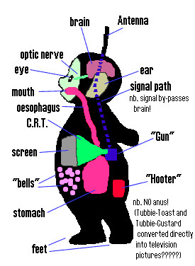
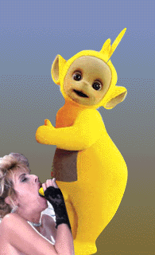

Это романика значит, что ли?
Или каролингское Возрождение?
http://www.lgz.ru/Literature/art13.htm
Некоторые тезисы Неоготики изложены также здесь:
Ещё у меня ко всем-всем вопрос. Напомните, пожалуйста, как звали кого-нибудь из неоплатоников из Академии Медичи? Вчера с Ал. Ивановым совместными усилиями вспомнили лишь Марчело Фичино. Он вспоминал фамилию, а я — имя. За правильность не ручаемся.
Блядь, я знаю, что они есть, я как зовут забыл!..
Еще это. Я, пардон, не отвечаю щас на деловые письма, потому что, как вы метко заметили, нахожусь в перманентном оффлайне и пр. Извините, но это надо так.
— Это не от неуважения, — ошарашенно повторила (кухарка профессора Преображенского) и пошла закрывать дверь.
Это оттого, что бизнес временно торчит в жопе (а письма были про бизнес). Всё наладится, когда, — как говорил Фродо Торбинс, — нибудь потом.
Скоро, будут свежие сплетни.